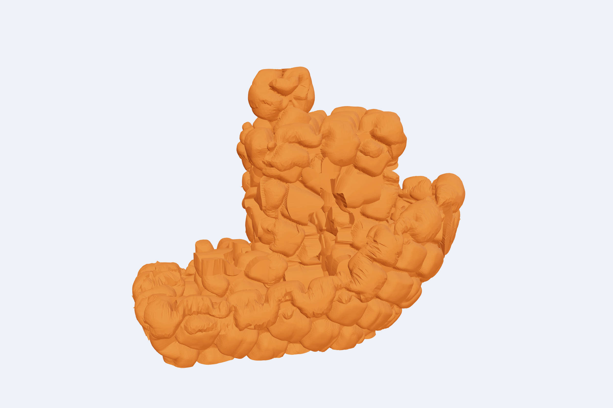
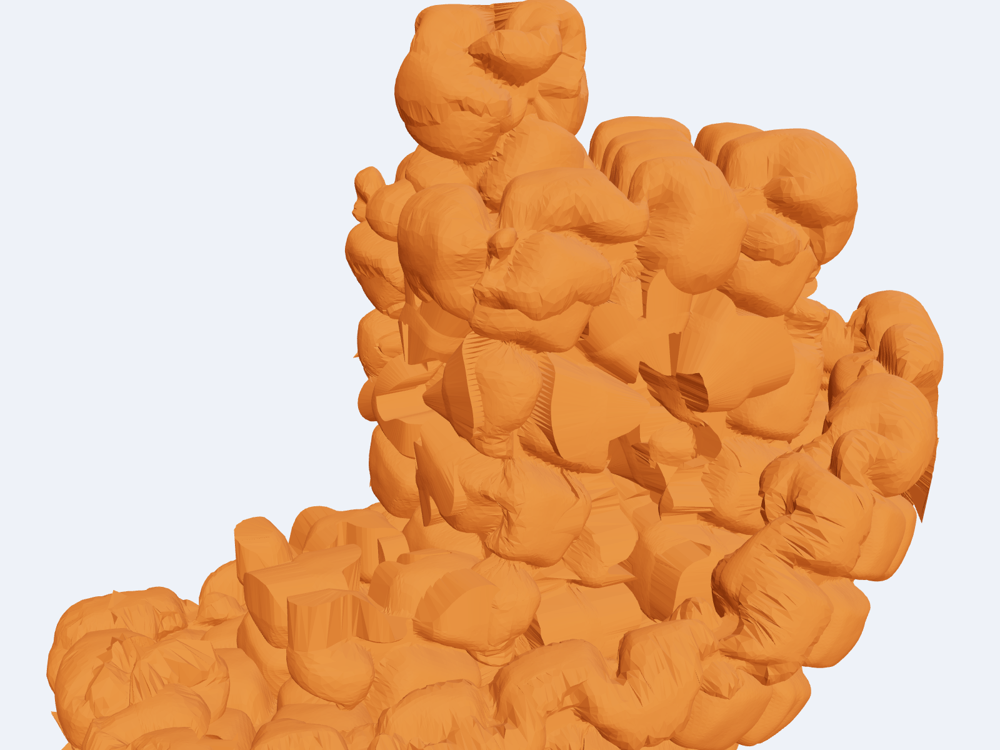
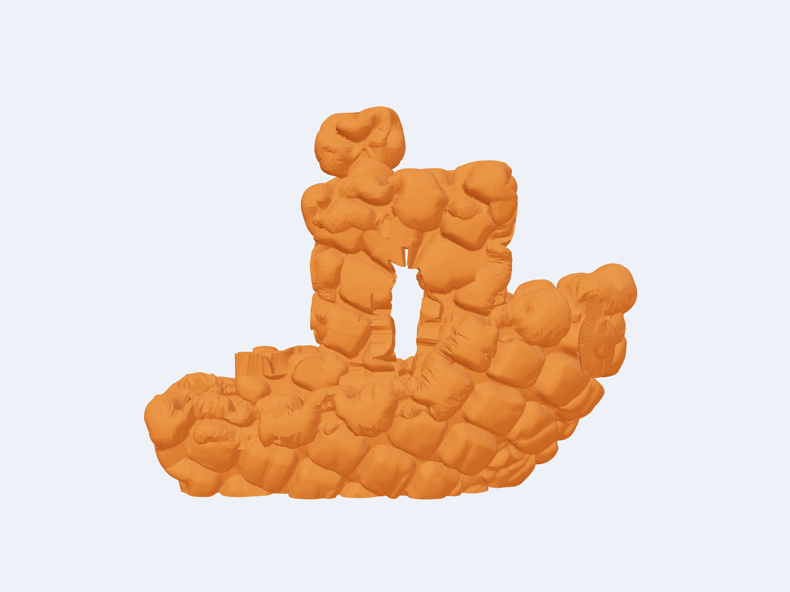
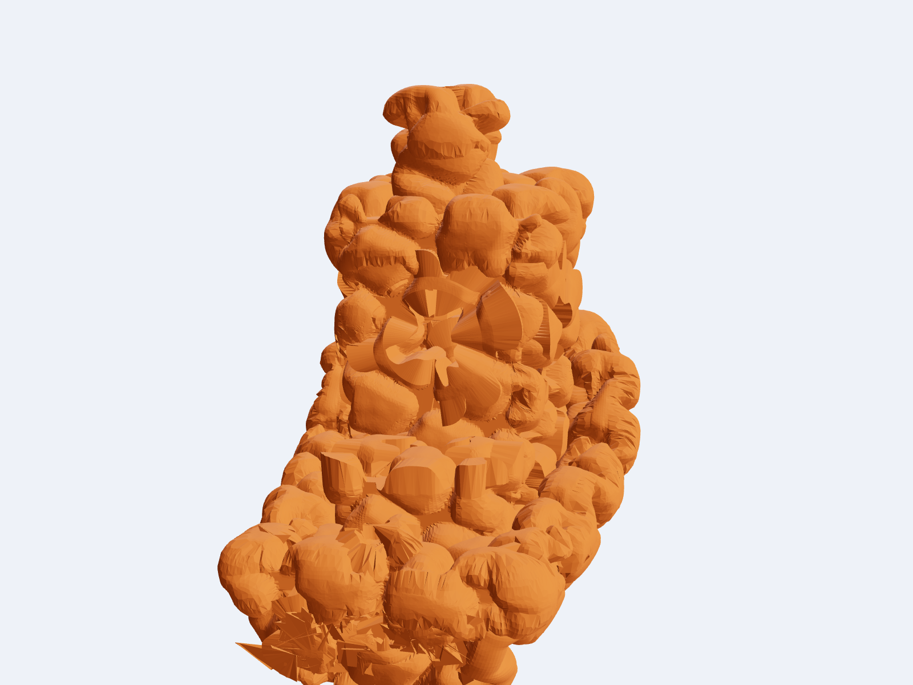
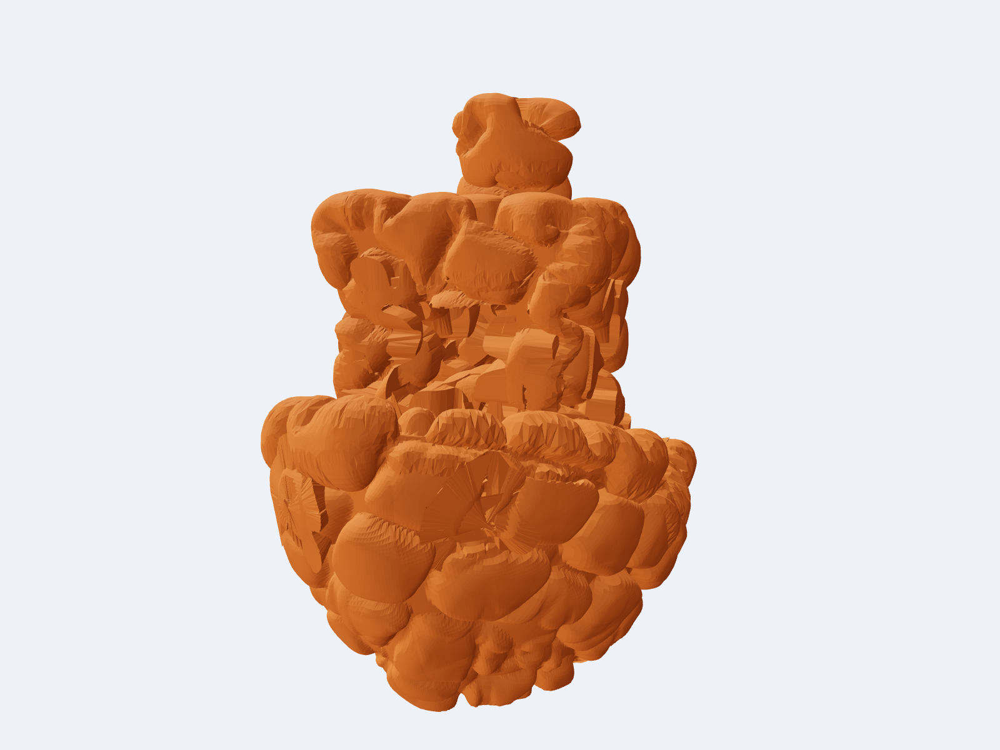
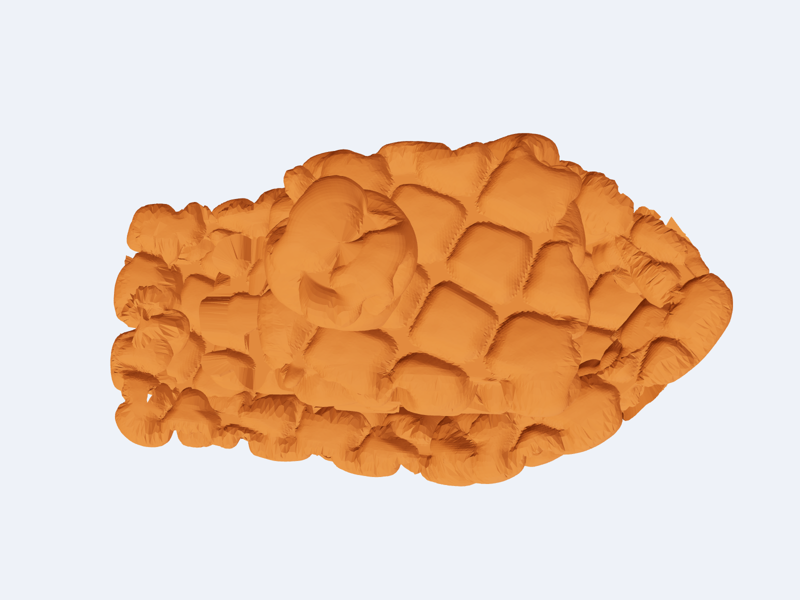
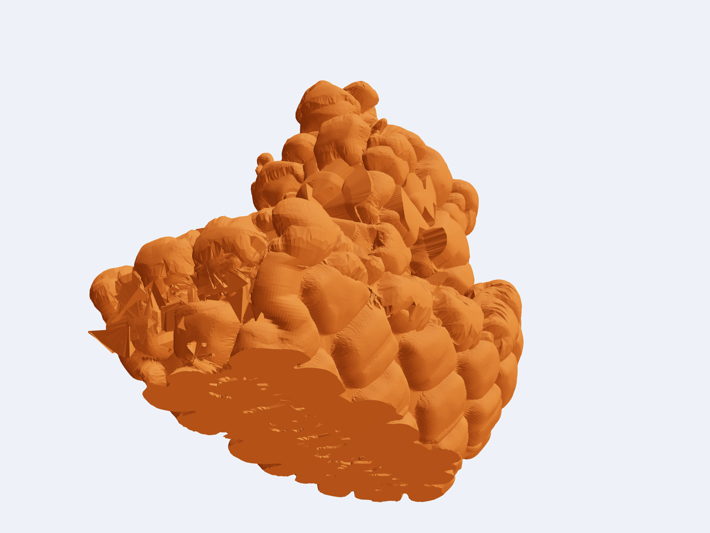

Cursed Benchy
A 65 × 37 × 51 mm 3DBenchy wearing three millimetres of square setts. Still one colour, still no supports, now 632,000 triangles of cobblestone.


Square setts
BumpMesh's Square Setts preset, amplitude 3.00. The stones are displaced from the original hull, so the surface is one continuous skin.

Still a Benchy
The hull, cabin, arched window and chimney are all still in there. The silhouette gives it away.

Bow
The prow is rounded off by the stones. The whole skin is overhang-heavy, which is the point of printing it.

Stern
The chimney is a stack of boulders. The stern is a wall of setts with the cabin buried in it.

Deck
From above it reads as paving: square stones sitting proud of the deck with deep joints between them.

Bottom
The bottom is cut flat, so it sits on the plate. The first layer is one cobbled footprint.
Printing
Download cursed_benchy.stl and print it in one colour, standing as it is. No supports. On the X2D's stock 0.20 mm profile it came to 25 g and about 1 h 54 min.
3DBenchy by Daniel Norée (CC0 1.0). Texture made with BumpMesh by CNC Kitchen, Square Setts preset at amplitude 3.00.